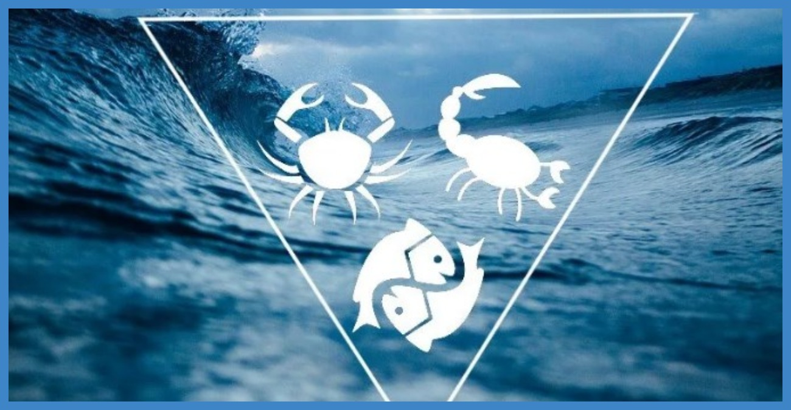

Дивные озера.

В обычном понимании озера — это природные котловины, сформированные в ходе землеобразовательных процессов и наполненные водой. Большинство озер пресные, некоторые — соленые; но известны также весьма необычные водоемы, вместо воды содержащие деготь и смолы, а также чернила, сероводород или серную кислоту.
Природные битумы встречаются в виде асфальтовых пород — например, песка, пористого известняка, пропитанных битумом (содержание битума от 5 до 20 %). Такие породы встречаются в Венесуэле, Канаде, на острове Тринидад и др. Имеются месторождения практически чистых битумов (например, битумные озера на Сахалине). Природные битумы образовались при разливе нефти в результате испарения из нее легких фракций и частичного окисления кислородом воздуха. Мировые запасы природного битума более 500 млрд. тонн.
Среди перистых пальм и зеленой листвы на юго-западном берегу Тринидада, примерно в 80 км от Порт-оф-Спейн, по главному прибрежному шоссе, ведущему в Бонас, находится диковинное озеро дегтя. Это — самая известная, хотя и не самая удивительная достопримечательность острова. Впрочем, постоянный поток туристов свидетельствует, что этот феномен обладает определенной специфической притягательностью. Вместо привычной текучей прозрачной жидкости озеро состоит из волн густого, тягучего дегтя. По внешнему виду наполнение котловины представляет собой маслянистую, липкую, слегка пузырящуюся серо-черную грязь.
С научной точки зрения озеро дегтя считается величайшим на планете естественным резервуаром асфальта и состоит примерно на 40 % из битума, на 30 % из глин и на 30 % из соленой воды. Озеро достигает приблизительно 82 м в глубину и занимает 45 гектаров земли. Как ни странно, по нему разбросаны небольшие островки, покрытые растительностью. Эти своеобразные «оазисы» образовались там, где опавшие листья и другая подверженная гниению растительная масса скопились в образовавшихся на поверхности карманах и превратились в плодородный компост, на котором смогли вырасти узловатые деревья.
Озеро не статично: свежий деготь постоянно поднимается на поверхность и разгоняется по краям медленными течениями. Поверхность этого странного вместилища настолько плотная, что по ней можно пройтись, хотя под ногами постоянно появляются и тут же лопаются пузыри выталкиваемых сернистых газов. Дождевая вода собирается в углублениях между складками, и битумные масла растекаются по этим лужицам, заставляя их переливаться всеми цветами радуги в изменяющемся освещении. По местной легенде, озеро дегтя образовалось на месте поселения индейцев чайма, проклятого богами после того, как его жители имели смелость употребить в пищу священных птичек колибри.
Ученые считают, что некогда озеро дегтя находилось на дне моря. Около 50 млн. лет назад тела мелких морских животных опускались на дно и превращались там в смолы, просачивавшиеся через пористые горные породы. Затем под действием образовательных процессов в земной коре смолы были вытеснены на поверхность и сгустились под действием солнца.
Промышленная добыча дегтя и смол велась на озере в течение как минимум 100 лет, но все прокопанные траншеи очень быстро заполняются новым асфальтом, стирающим все следы человеческой деятельности. Тринидад был открыт Колумбом в 1498 г. Столетием позже английский авантюрист Уолтер Рэйли посетил остров и стал использовать деготь для своих кораблей, заявив, что он значительно превосходит по качеству сырье, поставляемое из Норвегии. Сегодня природный асфальт чаще применяют для покрытия местных дорог.
Тринидадское озеро дегтя не уникально. Озеро смолы существует в близлежащей Венесуэле, а в центре оживленного Лос-Анджелеса расположены смоляные ямы La Brea Tar Pits («brea» в переводе с испанского означает «смола»). Специалисты считают, что весь Лос-Анджелес стоит на подземном море жидкого асфальта — Salt Lake Oil Field, а этот асфальт выходит на поверхность в самом центре города — на одной из его фешенебельных улиц под названием Wilshire Boulevard. Эти безобидные с виду, но смертельно опасные черные вязкие лужи-ловушки обнесены изгородью, чтобы люди не могли упасть в них и увязнуть. Подобная трагическая судьба постигла тысячи доисторических животных задолго до того, как 200 лет назад испанцы основали здесь крупное поселение.
Уже в 1875 г. геологи рассуждали о том, что в смоляных ямах могли сохраниться кости животных, но прошло еще 30 лет, прежде чем археологи приступили к исследованию их содержимого. Было извлечено более полумиллиона костей животных, идентифицировано более 650 разновидностей последнего периода эпохи Плейстоцена — это млекопитающие, птицы, грызуны, амфибии, рыбы, моллюски, насекомые. Среди более 30 видов млекопитающих были извлечены скелеты саблезубых тигров, лохматых колумбийских мамонтов, вымерших косматых медведей, диких лошадей, гигантских ленивцев, древних бизонов, трехметровых мастодонтов с горизонтально растущими бивнями пятиметровой длины, огромных грифов с размахом крыльев 4 м и т. д. В настоящее время скелеты из La Brea Tar Pits, составляющие величайшую в мире коллекцию останков животных, существовавших 15 тыс. лет назад, выставлены в краеведческом музее Лос-Анджелеса.
Впрочем, смоляные ямы Города Ангелов привлекают не только археологов. Это гиблое место многократно обыгрывалось Голливудом. В частности, в асфальтово-смоляной яме побывал нынешний губернатор штата Калифорния, замечательный актер и спортсмен Арнольд Шварценеггер во время съемок фантастического фильма «Последний герой».
Природные запасы асфальта имеются и в славящемся своими целебными свойствами Мертвом море. О его чрезвычайной солености и уникальном составе воды знают многие, однако об асфальтовых залежах доводилось слышать далеко не каждому. Скопления асфальта, по виду напоминающего смолу, время от времени всплывают на поверхность и выбрасываются волнами на берег. Добыча асфальта в Мертвом море ведется с древнейших времен. Применяется он в разных отраслях промышленности: для строительства дорог, смоления судов, получения всевозможных химических продуктов.
До середины XX века считалось, что район Мертвого моря — практически единственный поставщик асфальта во всем мире, и лишь в 50-х годах прошлого века были открыты и разработаны новые месторождения.
Дивное озеро, наполненное настоящими чернилами, находится в Алжире, неподалеку от города Сиди-Бель-Аббес. В водоеме нет ни рыб, ни растений, поскольку эти природой созданные чернила ядовиты и годятся лишь для того, чтобы ими писали на бумаге. Долгое время люди не могли понять, каким образом возникает столь необычное для водоема вещество. И лишь недавно ученые, проведя тщательный химический анализ, выяснили причину этого феномена. Оказалось, что загадка заключается в составе воды двух речек, впадающих в чернильное озеро. В одной из рек содержится огромное количество растворенных солей железа, в другой — всевозможные органические соединения, многие из которых позаимствованы из расположенных в речной долине торфяных болот. Сливаясь вместе в озерную котловину, потоки взаимодействуют друг с другом, и в ходе постоянно происходящих химических реакций количество чернил все более пополняется.
Местные жители к данной достопримечательности относятся неоднозначно. Одни считают озеро дьявольским наваждением, другие, наоборот, пытаются извлечь из него пользу. Поэтому и названий у него существует с полдюжины. Среди наиболее известных — Око дьявола, Черное озеро и Чернильница. А чернила из него продаются в магазинах канцелярских принадлежностей не только в Алжире, но и в ряде других стран.
Весьма любопытны озера, которые словно играют в прятки, то исчезая с лица Земли, то появляясь вновь. Весной благодаря обилию талых вод они разливаются, а летом начинают мелеть и совсем пересыхают. В России есть несколько таких водоемов — в районе между Онежским и Белым озерами, а также в Нижегородской, Новгородской и Ленинградской областях. Весной и в начале лета эти водоемы практически не отличаются от своих собратьев. Но если приглядеться, в совершенно безветренную погоду, когда поверхность обычных озер спокойна, у «озер-призраков» она рябит и волнуется, а ближе к центру возникает нечто вроде круговорота. Это происходит потому, что на дне странных водоемов имеются глубокие воронкообразные ямы, в которые, закручиваясь спиралью, уходит вода. После половодья, когда приток талых вод ослабевает, уровень воды в этих озерах спадает. Они быстро мелеют: сначала появляются и растут островки, затем обнажается дно, и, наконец, наступает момент, когда озера попросту исчезают. В наиболее засушливые годы на месте этих водоемов люди пасут скот и косят траву.
Самые известные из пропадающих водоемов — Шимозеро, Куштозеро и Сухое. Первое исчезает в августе, второе — в июле, третье — в сентябре. Озеро Сухое, к примеру, сообщается подземным ходом с Ильменем, а Куштозеро — с Онежским. Бывало так, что выпущенную в Сухом озере щуку с серьгой или радиодатчиком вылавливали потом в Ильмене.
Ученые объясняют исчезновение подобных озер чисто геологическими причинами. Находятся эти водоемы в районе карстовых пещер и питают подземные озера, а также различные родники и источники. Иногда на месте воронок случается обвал, и тогда «слив» закупоривается. В таких случаях водоемы могут просуществовать неизменными в течение нескольких лет, но в конечном итоге вода все же растворяет известняковые и доломитовые породы и прокладывает себе новый путь в подземелье.
На Синайском полуострове есть удивительное озеро с необычайным температурным перепадом глубин. Оно отделено от Красного моря широкой перемычкой из окаменевшего ракушечника. В верхних слоях озера обитают рыбы и прочие представители морской фауны, а на мелководье растут водоросли голубовато-зеленого цвета. У самой поверхности температура воды почти круглый год неизменна, равняясь 16 °C, а на глубине 6 м и более она колеблется от 48 °C зимой до 60 °C летом. Вследствие этого вся живность предпочитает селиться в зоне теплового комфорта, т. е. в верхнем слое. Кроме температурного режима верхний и нижний ярусы отличаются и по солености — наверху она равна 42–43 промилле, а возле дна вдвое насыщеннее. На нашей планете имеются и другие горячие соленые озера, однако ни в одном из них не наблюдается столь удивительного распределения солености и температуры по вертикали.
Самый теплый в стране вечных морозов водоем находится в Антарктиде. Толщина льда, покрывающего озеро Ванда, равна 4 м. Сразу подо льдом вода пресная, а на глубине — уже соленая. Даже в самые лютые морозы, достигающие -50–70 °C, температура воды подо льдом не опускается ниже 6 °C, а на дне (на 70-метровой глубине) она составляет 25–28 °C, словно в тропическом водоеме. Но самое удивительное, что на дне озера Ванда нет никаких горячих источников. По мнению ученых, секрет этого диковинного теплого озера состоит в том, что оно является своеобразным гигантским термосом. Его кристально чистые и прозрачные воды, в которых отсутствуют какие-либо микроорганизмы, хорошо прогреваются солнцем сквозь преломляющую солнечные лучи линзу льда. Наиболее теплыми оказываются глубинные воды, которые из-за своей солености, большей плотности и тяжести остаются внизу и не перемешиваются с верхними слоями.
Красивейшее озеро Босумтви находится в Республике Гана, в тропических африканских лесах, в 30 км на юго-восток от города Кумаси. Оно известно как самый непредсказуемый водоем в мире. Босумтви имеет форму правильного круга, словно кто-то исполинским циркулем прочертил окружность и вырыл здесь яму глубиной около 400 м и диаметром 7 км. Цвет воды в озере голубоватый, кое-где вдоль берегов джунгли расступаются и образуют поляны, на которых находятся небольшие поселения. В озеро впадают несколько горных речушек, но ни одна река из него не вытекает. Видимо, поэтому уровень воды в «озере-круге» неуклонно повышается, постепенно затапливая находящиеся на берегу поселки.
Но больше всего Босумтви потрясает людей своим взрывным нравом. Многие месяцы оно хранит тишину и спокойствие, но вдруг неожиданно взрывается. В глубине его словно бы лопается гигантский воздушный пузырь, вверх взлетают огромные каскады воды, поверхность озера кипит и бушует. Постепенно Босумтви успокаивается. Из-за таких взрывов гибнет много рыбы, и аборигены сачками собирают ее к ужину. Ученые полагают, что причиной взрывов являются донные отложения, в которых происходит распад органических веществ. Выделяющиеся газы накапливаются до максимального предела, а затем бурно вырываются из недр озера.
Для ученых-географов Босумтви — настоящая загадка. Одни исследователи считают, что озеро образовалось в результате падения на Землю гигантского метеорита, другие придерживаются гипотезы о взрыве антивещества, не оставившего после себя никаких осколков и обломков. И, наконец, самая правдоподобная версия — это образование Босумтви в результате вулканической деятельности. Вполне вероятно, что находящееся в горном районе озеро занимает дно разрушенного конуса вулкана, существовавшего в древние времена.
Озеро Могильное, расположенное на острове Кильдин близ Кольского полуострова, считается самым «слоеным» в мире водоемом. Высота воды в нем несколько выше уровня моря, несмотря на то, что от моря оно отделено всего лишь гравийно-песчаной перемычкой. Напоминающий слоеный пирог водоем делится на пять совершенно самостоятельных, не похожих друг на друга ярусов. Самый нижний уровень, располагающийся на глубине 17–18 м, заполнен жидким илом; здесь гниют органические остатки, поступающие с верхних этажей. Этот слой является мертвым, лишенным кислорода, зато в больших количествах там представлен сероводород.
Единственные обитатели первого яруса — некоторые виды бактерий. На втором «этаже» царит вечный полумрак, вода насыщена бактериями пурпурного оттенка, окрашивающими ее в вишнево-розовый цвет. Эти бактерии активно поглощают и окисляют поступающий снизу сероводород, благодаря чему смертельно опасный газ не проходит в верхние ярусы. В третьем слое довольно широко представлены жизненные формы: морские звезды, морские ежи, моллюски и несколько разновидностей раков, а также особый вид трески, именуемой кильдинской в честь острова. Четвертый «этаж» — это переходная зона, в которой вода умеренно солоноватая, а морских обитателей нет. Зато пятый, самый верхний ярус заполнен пресной водой, холодной и прозрачной. Там живут многочисленные организмы, типичные для арктических водоемов. Могильное озеро является одним из древнейших. Оно пережило несколько геологических эпох и сохранило некоторые виды живых существ, давно исчезнувших в соседнем Баренцевом море. Исследователи до сих пор не разгадали тайну возникновения «слоистого» озера и его удивительных жизненных форм.
На территории России известен воистину безжизненный водоем, в котором, казалось бы, имеются прекрасные условия для существования живых организмов. Это озеро Пустое, расположенное в районе Кузнецкого Алатау. Все водоемы вокруг кишат рыбой, а в Пустом совершенно нет жизни, несмотря на то, что озера соединены реками. Исследователи не раз пытались заселить странный водоем различными видами рыб, отдавая предпочтение наиболее неприхотливым, но ничего из этого не вышло — вся рыба «уснула», а Пустое так и осталось пустым. Никто не может объяснить, каким образом возник и почему до сих пор лишен жизни этот загадочный водоем. Но самое удивительное то, что химики, проводившие анализ воды на предмет возможного содержания в ней ядовитых веществ, установили, что ничего подобного в ней не растворено. Вода Пустого озера оказалась практически такой же, как и в соседних «живых» озерах.
А вот самым опасным водоемом на нашей планете по праву считается озеро Смерти, находящееся на острове Сицилия. Все берега и воды его лишены какой бы то ни было растительности и живности, а купаться в нем смертельно опасно. Любое живое существо, попавшее в это страшное озеро, моментально погибает. Стоит любопытному человеку окунуть в воду руку — и он тут же ощущает сильное жжение, после чего, отдернув конечность, с ужасом наблюдает, как кожа покрывается волдырями и ожогами. Ученые, сделавшие анализ содержимого озера Смерти, были немало удивлены — вода в нем не что иное, как раствор серной кислоты.
По этому поводу было выдвинуто несколько гипотез. Предполагается, например, что в озере растворяются какие-то неизвестные породы и за счет этого вода обогащается кислотами. Однако практические исследования подтвердили другую версию. Оказалось, в озеро Смерти выбрасывают концентрированную серную кислоту два источника, находящиеся на его дне.